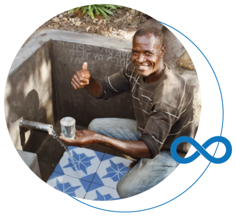
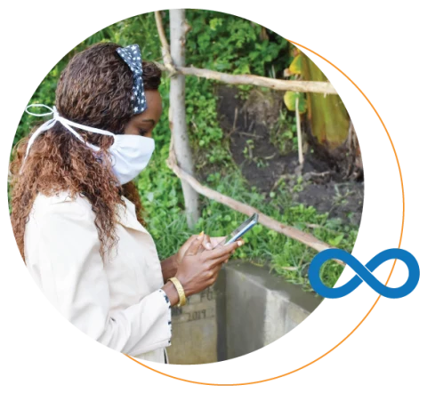
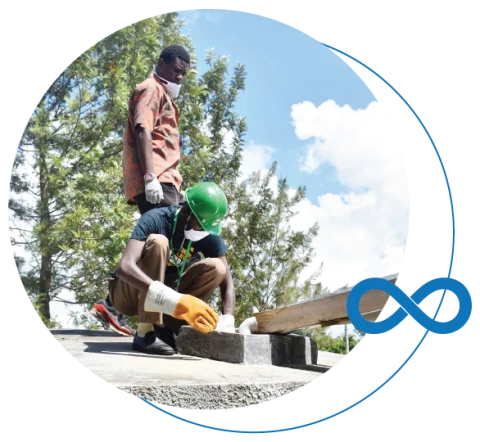

Every good thing made possible by access to safe water depends on it being available every day - year after year. Sadly, the
promise of safe water has been broken many times in the past and even still today, by otherwise well-intentioned groups.
Faulty and abandoned pumps are almost expected in places like Kenya, Sierra Leone and Uganda.
The Water Project has always taken pride in being one of the first to report transparently about your specific giving impact
through photos, project descriptions, stories, maps, and follow-up updates. Today, we continue holding ourselves and our partners
to the highest standards and values as we implement more robust monitoring and resolution
commitments to ensure our promise to
keep water flowing for every community we serve.
We track and report our data with 100% transparency, 100% of the time. You can see the status of all our water projects in real-time
and view a detailed project report of each community as well as the type and condition of their water point. When a pump breaks
down or tank runs dry, we want it fixed. For all of our work, past and present, we're employing new monitoring technology,
training maintenance teams, and setting aside 5+ years’ worth of resources to fund repairs and resolve problems.
All Our Water Projects Are Backed by The Water Promise
It all begins with a community water project which impacts lives and unlocks potential. But life is not always that simple. Wells can break down or go dry. Water tables can fall. And because serving people matters more than the number of project points on a map, our most worthy investments must result in provable, reliable water access over time. The Water Promise is our guarantee that water keeps flowing.

Simple and Sophisticated
We collect data from our past projects through local teams equipped with smartphones. Purpose built software enables us to collect and evaluate the information in near real-time. Then, we act to fix problems — because monitoring is useless without resolution. With this tech, when something goes wrong, a repair team is alerted automatically to get water flowing again.

Keeping The Promise of Water Flowing
A water point can only unlock human potential when it's safe, clean and reliable. The Water Promise employs teams of local mechanics to resolve any problems we uncover during routine monitoring or when a community reports an issue. Building and improving supply chains, learning from trends, and keeping water flowing builds trust and resilience in the communities we serve together.

Your Impact on This Screen
Like all our data, we’re making all of this 100% public. You can view the status of your project report (and all our water projects) at any time. Data is uploaded as we receive it so you can track functionality along with us. We’ll use the data to ensure quicker maintenance and reliable water service. 100% Transparency. 100% Accountability..